I fear I've been looking at this all wrong. The wool's been pulled over my eyes for a long time. I've been played like a damn fiddle, and buried my doubts behind faith - but no longer.
The remaining traitors are Chris and Liv. And it all starts with game one.
I go immediately after 2sheds with documented proof of a lie, not just a random accusation, and I don't wait, I do it immediately as the very first action in the entire game. I'm right and become Harriet, people's champion. Lube, Chris and Liv do not vote for 2sheds.
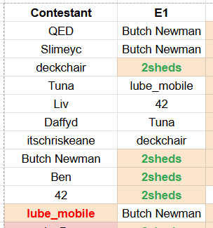The following morning at 9:30 AM, Chris is immediately in my DMs planting seeds about RCB, who we now know is faithful. For what it's worth, there's also a LOT of "i'm so dead" chat from Chris in the coming weeks to no avail.
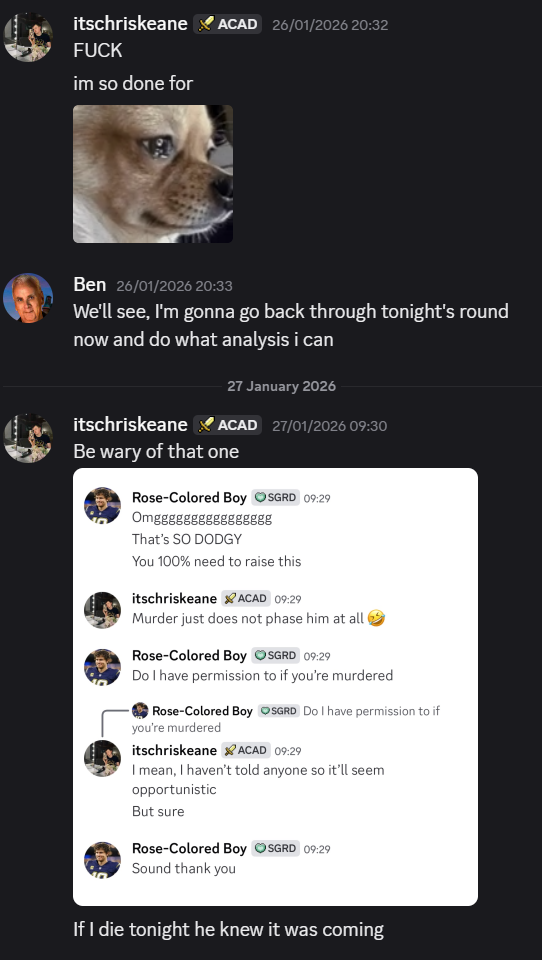And who is the primary instigator of the following RCB banishment? Liv. Funnily enough, she's defending Lube at the same time.

I support this after talking with Chris, and Lube also votes in line. Nearly all of us do. We're all wrong.
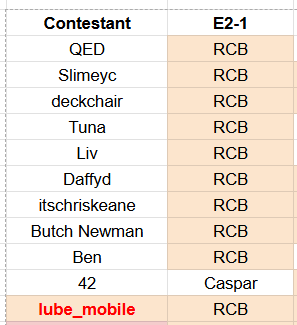After this, Caspar basically gets himself banished with guidance from 42, nothing really to say here, we were all there.
Now it's week 2, February 2nd. I no longer have a shield, but I make it, and the obvious meme question begins - why am I still alive? My theory is that the traitors are hoping the longer this goes on, the more suspect I look, and I get banished anyway while they pick off other players. I'm sure you're all aware by now that this seems to have backfired on the traitors, and you'll see later that they've had to adjust accordingly.
If QED didn't have a shield in this round, things might have gone differently, but regardless Isaac doesn't show up to the game and gets banished for it. A real waste of a round table.
It's post-game, and here's where something spooky happens. Look at these three chats between me, Liv, Chris, and all three of us - and look at the time stamp here.
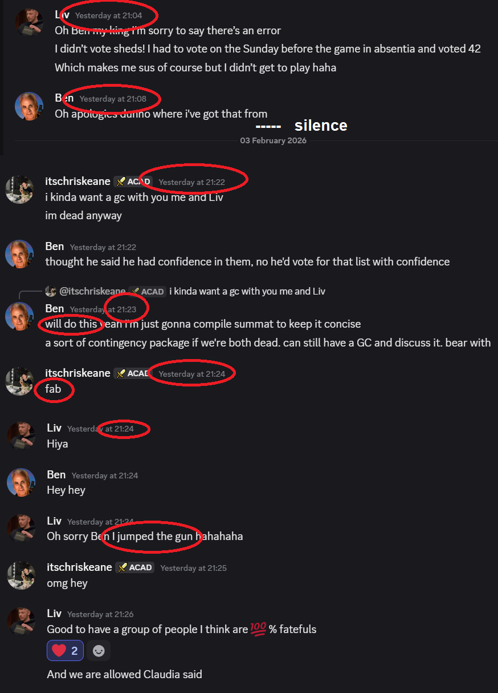I freeze. I say hello, but three minutes pass before I can say more because I'm shook. Just to prove I'm not making all of this up out of thin air at the last minute out of desperation - I even message Claudia vaguely about this, because my brain is whirring with crazy theories about how this is a side team, an "in-game couple" or, shit, the same person - I barely know these people from OOF.
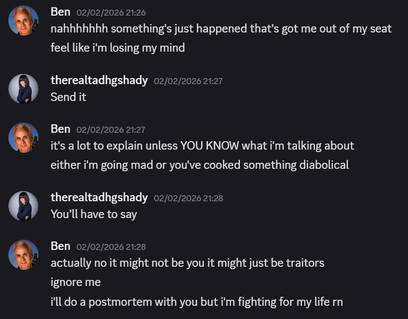I tell myself that's crackpot, and move on. But isn't this weird? Look at the times. Me and Liv don't speak for 16 minutes, Chris says he wants a group chat, I say I'll be the one to make it, then Liv creates it and says "sorry Ben I jumped the gun"? On what? What did YOU jump the gun on? I think they were speaking privately about making the group chat with me, and Liv got ahead of herself.
So here's the crux of my argument. Think about it - the traitor hunter is still alive. I'm being kept alive for a purpose. And now, as seen here, because of faithful Isaac's death, the ONLY three-way conversation I have going in this game is between myself, Chris and Liv, instigated by them. As of writing this, there are over 650 messages in that group chat alone pointing fingers at almost everybody but us.

They've been keeping me in their pocket this whole time. They're going to play buddies with the most faithful player, carry me to the finale, and stab me in the back.
And, just so you know - remember the documents I put in the safe as a contingency plan? This group chat theroy wasn't in there... on the surface., as it stood on the night of February 2nd. You can ignore most of it, in fact it's quite comical how wrong some of it looks in retrospect - sorry JayDee - although I was right about Lube being the mastermind of the group. The rest of it isn't going to make me any friends right now, and it doesn't need to - you really don't need to waste time reading it all right now. Up to you. What I want you to look at is my sign-off of "Death Is Exhausting" - D.I.E. The only other instance of the word "die" on the page is where I call Chris my "ride or die".
The Safe DocumentsDo yourself a favour and click the word "die".
This was my contingency for a contingency.
So then - why not Lube? Well, for one, having all three traitors and the top faithful in one chat looks pretty suspicious, especially when I've been telling multiple people from the start that I think there's 4 traitors in the game total. Now, you all saw what happened. I know Lube, and I know just how smart he is - that graph you saw of Chris's posts? He'd been sending me data like that privately, and I know he's clever enough to do all that just to look faithful. I even say this to Chris and Liv here (real name redacted, as many of us know Lube's real name but probably shouldn't have used it to others without permission):
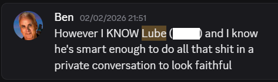I also know that Lube's clever enough to have fake DMs with other traitors which are then leaked out - keep this in mind. It's something any smart traitor would do. Now look at this conversation between Lube and Liv leaked into out three-way chat, from 5:06 PM on February 3rd, game night 4:
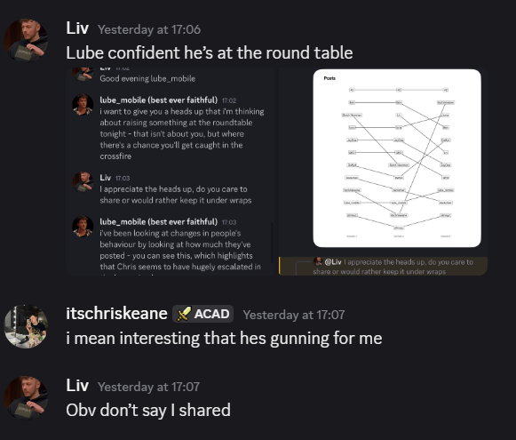 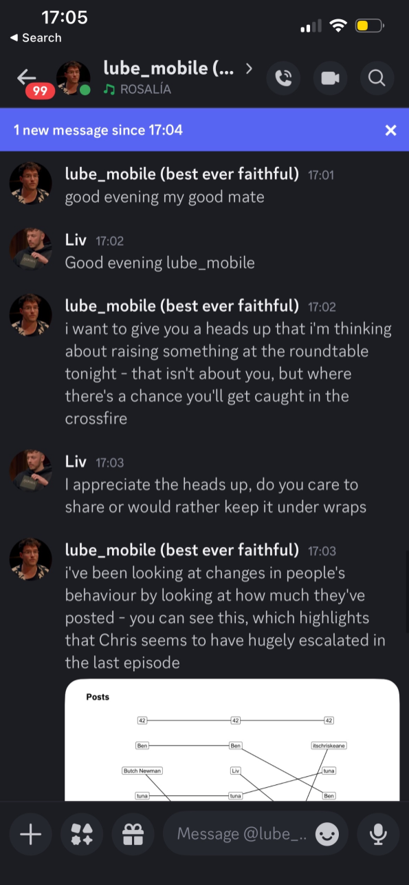Lube wants to give Liv a heads up that it "isn't about you, but where there's a chance you'll get caught in the crossfire" - why? There's nothing on this graph about Liv's posting that looks any more suspicious than other people's patterns. Liv and Chris have never voted for each other or said a bad word about each other. What is there to get caught in if not a traitor's web?
It was already clear there's dissent amongst the traitor ranks, but now it's certain - Or, hell, the long game is for Lube to sacrifice himself to make Chris and Liv look solid to me. Let's stick to the dissent theory to keep things simpler. Chris now messages me telling me he has to go for Lube tonight now.

Sure, makes sense to me - we'd been discussing going after both Lube and JayDee previously. Despite how keen I was to go after JayDee, and how much I THOUGHT I had on him at the time, Chris says maybe we leave JayDee for tomorrow:
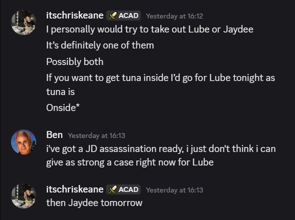Why? You know why. Because he already knows JayDee's been poisoned, and wants to gun for the traitor who, less than an hour later, confirms that he is indeed planning a coup. I tell Chris I'm going to go in on JayDee beforehand, but Chris isn't worried, because he knows he's already dead.
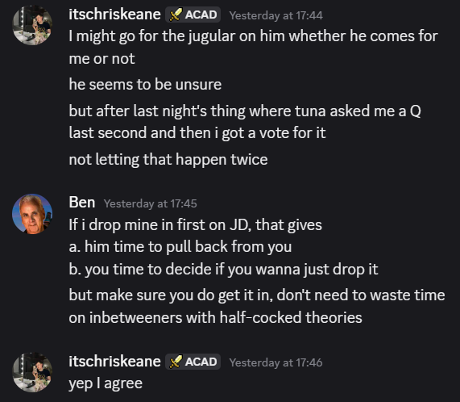So, then - on to the poisoning. I think this one's stumped a lot of us, but there's a possibility that me and QED had sort of stumbled upon the same solution individually. At 11:21am on February 3rd, I present this theory to Chris and Liv.
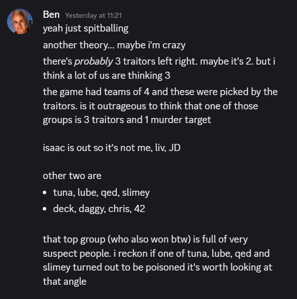What I didn't think about at the time was how the theory could be somewhat reversed - 1 traitor in a group of 3 faithful targets - until after Lube's banishment, where QED posts this:
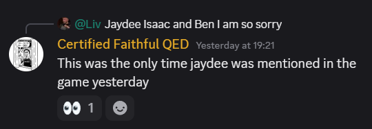A group with a dead player, a banished player, the top faithful... and Liv? The ONLY instance of anyone saying the word "JayDee" in the game chat on the night of the murder was Liv. It would also put one traitor in each group, which while not a guarantee, seems a pretty good way to go.
Now, a few of you were wondering what THIS eye react from Liv was all about:
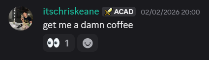Obviously, it wasn't anything to do with a poisoning. Here's what Liv says it meant.
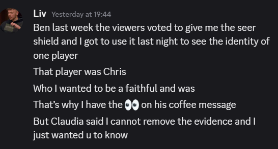That's right, apparently there's a seer power in the game, which has quite conveniently been used by Liv on Chris, and fed back to me. Sure is a great way to instill further trust, isn't it? Has ANYONE else been told about this by Liv? Maybe, but I doubt it. And why would Liv use it on Chris and not somebody she'd previously suspected and voted for like 42?
And this power, the power to completely reveal a traitor, was given to somebody only TWO ROUNDS into a six round game? Really?
I guess now's a good time to talk about the voting record, as below:
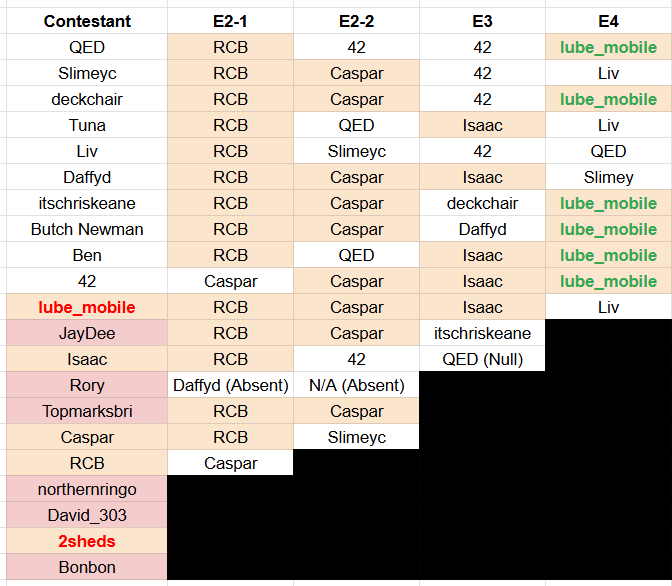What can we ascertain here? None of Lube, Chris or Liv voted for Sheds in the first round. Nor did any of them vote for each other until the fourth round when the betrayals started. Liv didn't vote for Lube in the fourth because QED accused Liv of being the poisoner - Liv can't exactly ignore this easily and is left with no choice.
Notice anything else funny? Like how in the first round, David_303 votes for Chris and then turns up dead the next day? Or how JayDee votes for Chris in round three and the next day turns up poisoned?
And in this same round... Lube plans to go after Chris in the first place with his graph, Chris goes after him prematurely, and Lube ends up voting for... Liv? What in the fried hell? Why? Is he indicating who the other traitor is as a leaving present?
Want more? Guess what happens mere minutes after the banishment in our group chat.
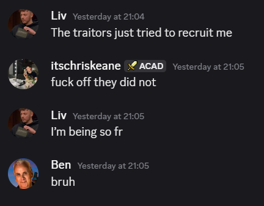You guessed it - the traitors have attempted to recruit none other than Liv, and failed, and she's made sure to let me know how faithful she is. Zero votes against her. A seer power. A rejected recruitment. It's all a lot, isn't it?
And all the while, Chris has been quite careful in privately sewing JUST enough seeds of doubt about Liv with me to not look suspect - this was February 3rd, before round 4. A nice little backup plan in case Liv turns on Chris, so that I immediately start looking at Liv.
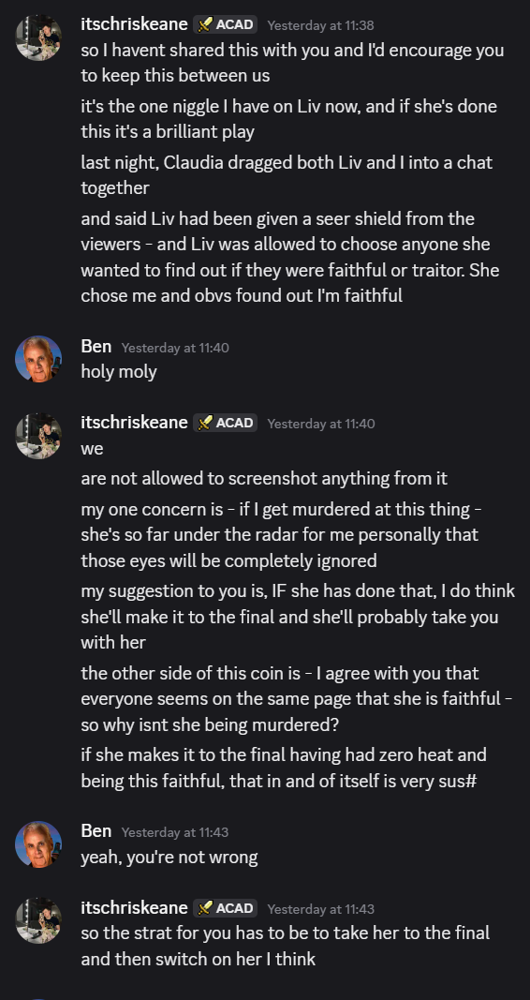But, she doesn't turn - she has to vote QED to not look suspicious, and Lube is voted out as planned. Chris retracts his further statements - mostly. Got to keep SOME doubt in mind.
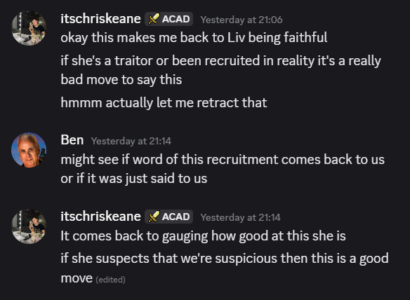So, that brings us to now, and with all this in mind - why didn't I say or do anything sooner? Well, a few reasons. For one, it doesn't benefit me or the faithfuls to get ahead of this and give the traitors ample opportunity to bolster ranks. And frankly, I've wanted to believe so much that Chris and Liv have been my ride-or-dies through this game; it's nice to have an anchoring point, but considering I'm not particularly close with QED, Slimey, Deck or Dave, the idea of two of them keeping me alive this long seems farcical.
I was at one point looking at QED as suspicious, but given what he saw and mentioned regarding Liv and JayDee, that's all changed.
I've largely trusted 42 and Tuna the whole game and have never vote for either or spun theories - and it's paid off, because at 10:09 AM on February 4th, Tuna sent me this leaked DM between him and Chris:
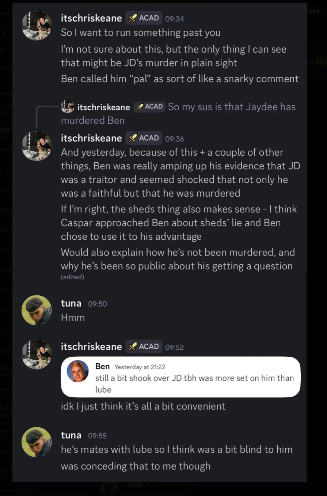Chris didn't count on me having other good friends in this castle. After ALL this time of me and him being stuck together, this is the first I hear of him having doubts about me and spreading theories on how I poisoned JayDee - and, frankly, a crap theory at that. JayDee spoke to me first, and I didn't even tag him in a response, this was just conversation.
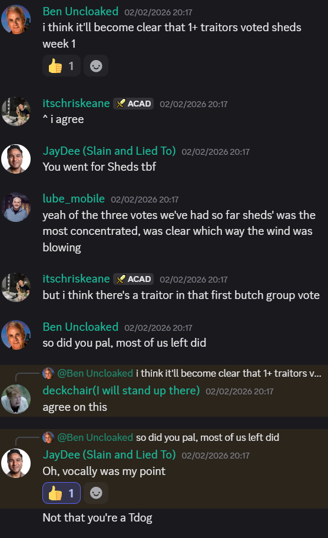It's almost as if QED has exposed the poisoning in broad daylight, and now Chris is panicking - not only is his fellow traitor in the limelight, but he has no idea whether she'll drag him down with him if she sinks. It's also the perfect time to start planting the seeds of doubt about good ol' 100% faithful Ben - why IS he still here after all this time? Assuming there's only two murders and a banishment remaining before the final banishment and firepit, that's a potential pool of two traitors and five faithfuls remaining. Lots of room for people to start pointing fingers - at anyone except Chris and Liv. Either people take Chris's sudden bait and look at me, or they don't, and I vote with Chris and Liv to remove everyone else until all the question marks are erased. I've been strung along for this purpose.
Originally, this document ended here when it was sent to a select handful of people on Wednesday the 4th at 3pm. Obviously, since then, we've had a riddle to solve, and what did we learn?
"Two secret objectives. Two secret powers." and clues that pointed to Liv and Lube. This is following Claudia's posting of two final chess pieces: the undoubted faithful, and the undoubted traitor.
I think we know which the viewers think is which. Zero votes Liv vs. "was banished in round 1 last time" Lube - yeah. So, they've both had a secret objective and power.
So wasn't this power just Liv's secret seer power that she'd already mentioned? Well, no. As above, this was already revealed to Chris and I in our group chat on the third, in reference to "last week".
But after we solved the riddles and I obviously went straight to the group chat to inquire, I was met with the following.
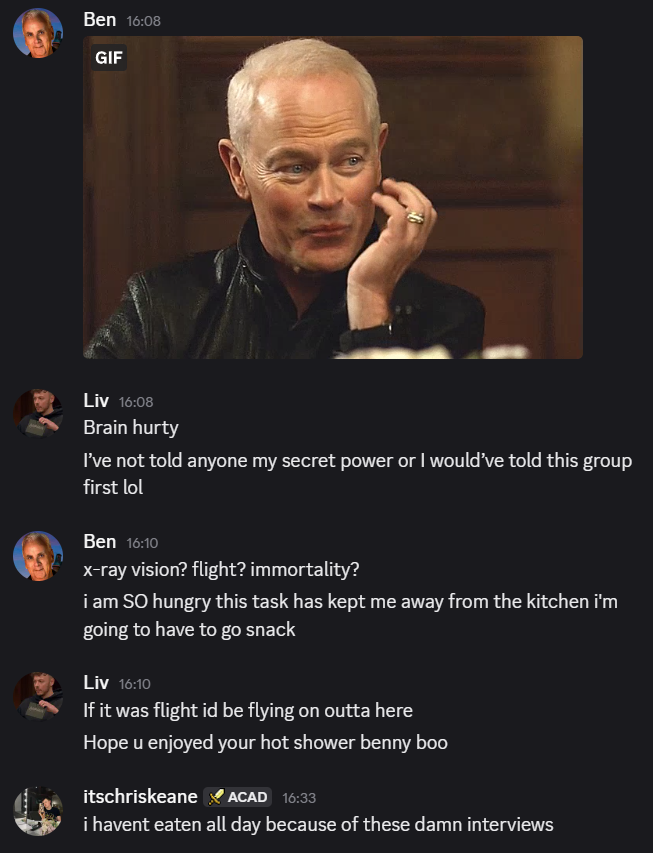Liv's brain hurts, she hasn't told ANYONE this power or she would have told us first... so it's NOT the magicaly seer power you were given last week, it's a different one. And now we're just moving on as if nothing's happened, with no further explanation. This is after previously calling us her 100%ers earlier in the same day:
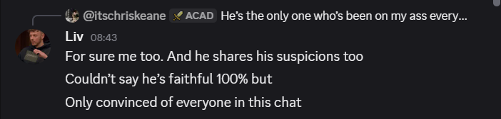And through all this, Chris is... silent. The guy who for a short while had his doubts about Liv is completely radio silent. No side DMs about the poisoning accusation, or this sudden reveal. Maybe he's a faithful and doesn't trust me, but I'm hearing nothing from any other players including the multiple that are already aware of this document.
Then there's the question of Lube's mission. If the viewers voted him a guaranteed traitor - and they were correct - what was his traitor's mission? I may not have time to look into this, but... could it have been to betray another traitor, or be exposed? Just a thought.
Anyway. For too long I was blinded by trust, and even though I've had my lingering doubts for a while, Tuna's leaked DM was the catalyst needed for this reckoning.
I'm tired, boss. I don't even care if I make it to that finale - in fact, the best play may be that I'm sacrified on Monday to allow a 1-2 punch in the finale and prevent the traitors from recruiting. What I care about is my fellow faithfuls winning, and I hope this dossier can be used for good.
Either I'm dead wrong, it's the most glorious failure in OOF history, and I hand the traitors a win on a silver platter - or I'm on the money, and we faithfuls win the game in spectacular fashion. I can't imagine it's anything in between.
I'm putting everything on the line for this.
Send it.